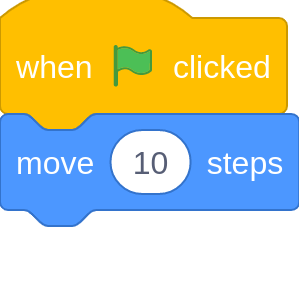
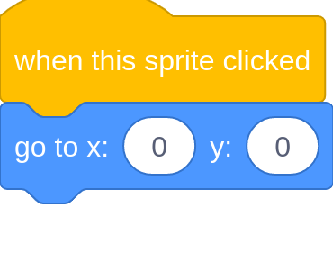
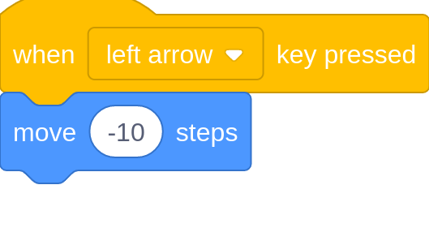
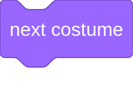
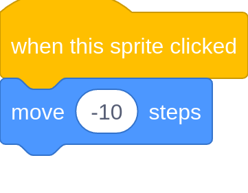
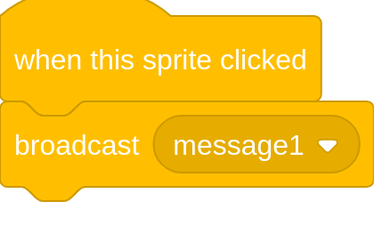
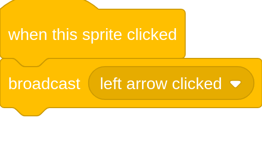
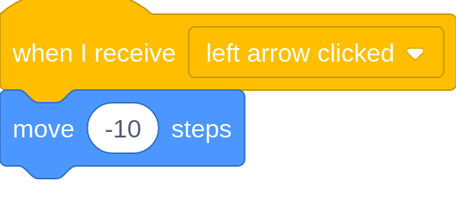

Scratch Lesson 1
You need to open a scratch project to follow this lesson, open one by clicking here.
First, we will make a project that, when the green flag is clicked, the scratch cat moves 10 steps.
Add this code to your scratch project:

Now press the green flag in your project. It should do the same thing as the project below.
If you have clicked the green flag multiple times, the cat will be stuck at the edge of the screen.
To fix this, we will make it reset when you click the cat.
Add the code below to your scratch project.

Again, press the green flag in your project and try clicking the scratch cat. It should do the same thing as the project below.
Now, lets make it move left when the left arrow key is pressed.
Add this code to the scratch project:
Note: if you put a minus number in move steps, it makes it move backwards.
Note: skip this part if you are on mobile.

Now, press the green flag in your project and try clicking the left arrow on your keyboard. It should do the same thing as the project below.
Now, lets make a mobile friendly left arrow.
In the area where the list of sprites are (in the bottom right), click the icon in the bottom right of that area and find and select one like the image below.
The arrow is pointing the wrong way so let's fix it!
Click on this block once but do not put it in the code.
Note: We will explain this block later.

Next, drag the arrow in the stage up to the top. And add the following code to it:

Now try running your project.
Im sure you noticed that when you click the left arrow, it goes backwards not the cat!
To fix this you need to use the broadcast block. It basically shouts to the whole project your message.
Then anywhere in your project, you can use the when I recieve block to listen for it.
When you broadcast something like "example", then code underneath when I recieve "example" will run.
Now lets change the arrow to broadcast "left arrow clicked".
First Delete the code below:
And add the blocks below:

Click on the "message1" and then click "new message" from the dropdown list. Then call it "left arrow clicked".
Your code should now look like this:

Now click on the scratch cat sprite and add the code below:

Your code should now do the same thing as the code below.
Thank you for using Lesson 1 of the Innovation Studios online coding tutorial. Please report any errors in this lesson,
coding related or not to me. If you are having problems, send me a message on google chat.
If you need any other programming help, contact me there aswell. Bye for now - Michael.